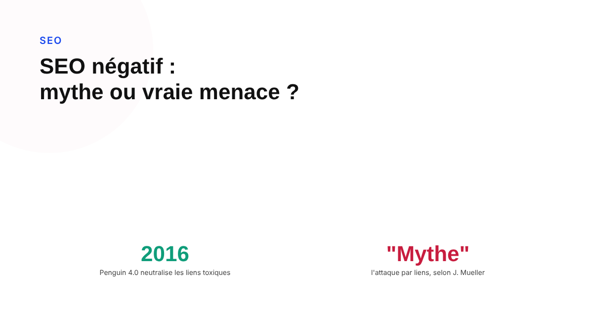
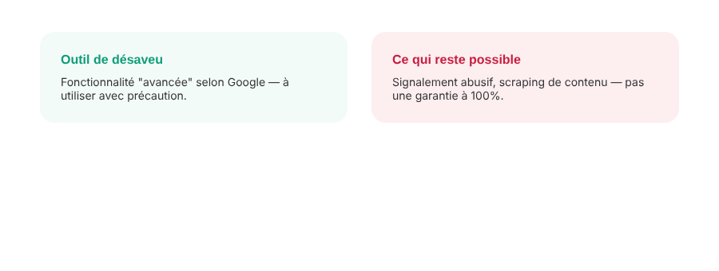

SEO négatif : ce que c'est vraiment, et ce qu'on peut faire contre
« Est-ce qu'un concurrent peut saboter mon référencement avec de faux liens ? » La peur du SEO négatif reste vivace, mais la réponse de Google à cette question précise est plus rassurante que ce que beaucoup de propriétaires de site croient encore.

Le SEO négatif désigne toute tentative délibérée de nuire au classement d'un site concurrent, plutôt que d'améliorer le sien. L'image qui vient le plus souvent à l'esprit est celle de milliers de liens toxiques achetés pour faire passer un site pour du spam aux yeux de Google. C'est historiquement la forme la plus connue de SEO négatif — et c'est précisément celle que Google affirme avoir rendue largement inefficace.
Pourquoi l'attaque par liens a perdu l'essentiel de son effet
Avant 2016, un afflux soudain de liens de mauvaise qualité pouvait réellement déclencher une pénalité algorithmique sur un site, ce qui en faisait une arme crédible contre un concurrent. La mise à jour Penguin 4.0, intégrée en continu à l'algorithme de Google depuis cette date, a changé la mécanique en profondeur : plutôt que de pénaliser un site pour des liens suspects, l'algorithme les ignore directement, sans effet sur le classement dans un sens ou dans l'autre. John Mueller a été jusqu'à qualifier l'idée que des liens toxiques achetés par un tiers puissent couler un site concurrent de « mythe » entretenu par certains outils SEO qui vendent des audits de liens toxiques. Cette neutralisation réduit fortement l'intérêt d'une attaque par liens, sans pour autant garantir, selon plusieurs analyses spécialisées, qu'aucun scénario résiduel ne puisse jamais faire effet.
L'outil de désaveu : une protection à manier avec précaution, pas un réflexe
Face à l'inquiétude des propriétaires de site, Google met à disposition un outil de désaveu de liens — mais le présente lui-même comme une fonctionnalité avancée, à utiliser avec prudence, en précisant explicitement que la plupart des sites n'en ont jamais besoin. La raison est directement liée au point précédent : l'algorithme sachant déjà ignorer la plupart des liens toxiques de lui-même, désavouer des liens sans certitude revient à prendre le risque de retirer accidentellement des liens qui, eux, aidaient réellement le référencement du site.

Ce qui fonctionne réellement aujourd'hui contre un site
La neutralisation des attaques par liens n'a pas mis fin au SEO négatif : elle a simplement déplacé les méthodes qui restent efficaces vers des manipulations de contenu ou de réputation, plus difficiles à automatiser pour l'algorithme. Le piratage d'un site pour y injecter du contenu malveillant ou des redirections cachées reste une menace réelle et documentée. Le scraping — la copie et republication massive d'un contenu original ailleurs sur le web, parfois avant même sa publication officielle — peut créer une confusion sur la source d'origine. Les fausses demandes de retrait de liens légitimes, envoyées à des webmasters en se faisant passer pour le propriétaire du site cible, visent à faire perdre de vrais liens utiles. Et les faux avis négatifs massifs, en particulier sur une fiche Google Business Profile, restent une tactique qui touche la réputation plus que l'algorithme lui-même : Google a indiqué surveiller les pics suspects de ce type de signalement pour les retirer.
Ce qu'il est raisonnable de surveiller concrètement
Plutôt que de guetter une attaque par liens devenue peu probable, la vigilance la plus utile aujourd'hui porte sur des signaux concrets : une sécurisation solide du site contre le piratage (mises à jour, accès, scan régulier), une veille sur la republication non autorisée de son propre contenu, et un suivi actif des avis clients pour repérer rapidement un afflux anormal et le signaler. C'est un déplacement de priorité qui reflète directement où se trouve le risque réel en 2026, plutôt qu'une menace de liens largement désamorcée depuis dix ans.
FAQ
Un concurrent peut-il faire baisser mon classement en créant de faux liens toxiques vers mon site ?
Selon Google, c'est devenu très difficile depuis la mise à jour Penguin 4.0 (2016) : les liens manifestement toxiques sont désormais ignorés automatiquement par l'algorithme plutôt que sanctionnés, ce qui retire une grande partie de l'intérêt de cette tactique. John Mueller a même qualifié ce type d'attaque de « mythe » dans plusieurs échanges publics. Les sources spécialisées restent toutefois partagées sur le fait que le risque soit totalement nul dans tous les cas.
Faut-il utiliser l'outil de désaveu de liens de Google par précaution ?
Google qualifie lui-même cet outil de fonctionnalité avancée à utiliser avec prudence, et indique que la plupart des sites n'en ont jamais besoin. Désavouer des liens sans certitude peut retirer des liens qui, en réalité, aidaient le site, puisque l'algorithme sait déjà ignorer la plupart des liens toxiques de lui-même.
Quelles formes de SEO négatif fonctionnent encore réellement ?
Les attaques qui modifient ce qui existe réellement sur ou autour du site restent efficaces : piratage du site, scraping et republication massive de son contenu ailleurs, fausses demandes de retrait de liens légitimes auprès de webmasters, ou avis frauduleux. Ce sont des manipulations de contenu ou de réputation, pas de simples manipulations de liens — et Google indique surveiller activement les pics suspects de faux avis.
Une inquiétude sur un signal suspect touchant votre référencement ?
Pour aller plus loin, voir la page SEO, et l'article Pourquoi Google n'indexe jamais certaines de vos pages.
Pour continuer sur ce sujet.